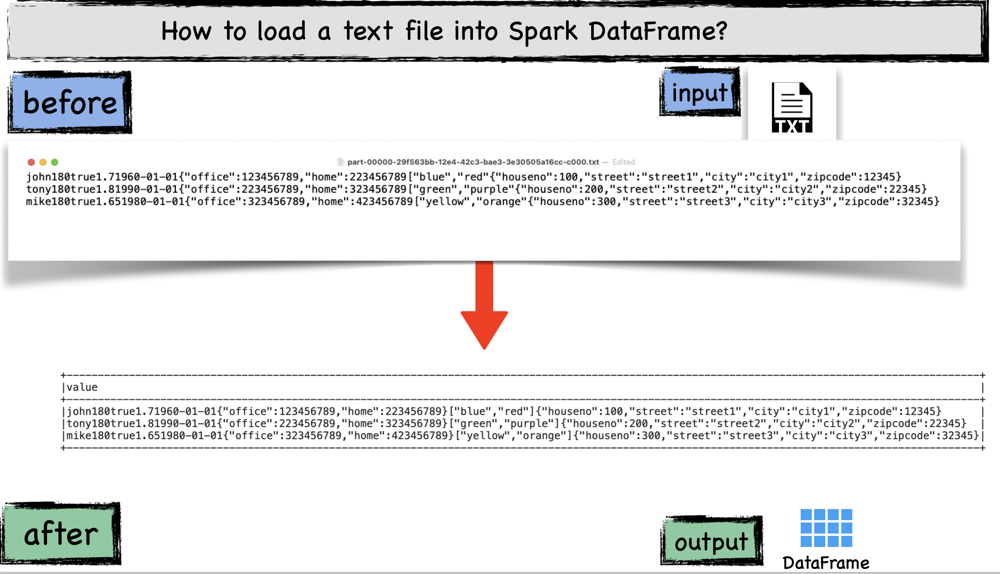

Chapter 3 : Data Sources¶
Chapter Learning Objectives¶
various data sources & file formats
general methods to load the data into spark dataframe
general methods to save the data into spark dataframe
Chapter Outline¶


test¶
border: 1px solid blue;¶
{: width=550 height=100 style=”float:right; padding:16px”}
1. What is spark dataframe?¶
A DataFrame simply represents a table of data with rows and columns. A simple analogy would be a spreadsheet with named columns.
Spark Data Frame is a distributed collection of data organized into named columns. It can be constructed from a wide array of sources such as: structured data files, tables in Hive, external databases, or existing RDD, Lists, Pandas data frame.
#alist = [(John 180 True 1.70 1960-01-01 {“home”: 123456789, “office”:234567567} [“blue”,”red”,”green”] ]
import pyspark
from pyspark.sql import SparkSession
spark = SparkSession \
.builder \
.appName("Python Spark SQL basic example") \
.config("spark.some.config.option", "some-value") \
.getOrCreate()
spark.createDataFrame([("John",180,True, 1.7, "1960-01-01", '{“home”: 123456789, “office”:234567567}'),]).show(1,False)
+----+---+----+---+----------+---------------------------------------+
|_1 |_2 |_3 |_4 |_5 |_6 |
+----+---+----+---+----------+---------------------------------------+
|John|180|true|1.7|1960-01-01|{“home”: 123456789, “office”:234567567}|
+----+---+----+---+----------+---------------------------------------+
jsonStrings = ['{"name":"Yin","age":45,"smoker": true,"test":34, "address":{"city":"Columbus","state":"Ohio"},"favorite_colors": ["blue","green"] }',]
otherPeopleRDD = spark.sparkContext.parallelize(jsonStrings)
otherPeople = spark.read.json(otherPeopleRDD)
otherPeople.printSchema()
#123
root
|-- address: struct (nullable = true)
| |-- city: string (nullable = true)
| |-- state: string (nullable = true)
|-- age: long (nullable = true)
|-- favorite_colors: array (nullable = true)
| |-- element: string (containsNull = true)
|-- name: string (nullable = true)
|-- smoker: boolean (nullable = true)
|-- test: long (nullable = true)
from pyspark.sql.types import *
from pyspark.sql import functions as func
schema = StructType([
StructField("name", StringType()),
StructField("weight", LongType()),
StructField("smoker", BooleanType()),
StructField("height", DoubleType()),
StructField("birthdate", StringType()),
StructField("phone_nos", MapType(StringType(),LongType(),True),True),
StructField("favorite_colors", ArrayType(StringType(),True),True),
StructField("address", StructType([
StructField("houseno", IntegerType(),True),
StructField("street", StringType(),True),
StructField("city", StringType(),True),
StructField("zipcode", IntegerType(),True),
]))
])
df = spark.createDataFrame((
[["john",180,True,1.7,'1960-01-01',{'office': 123456789, 'home': 223456789},["blue","red"],(100,'street1','city1',12345)],
["tony",180,True,1.8,'1990-01-01',{'office': 223456789, 'home': 323456789},["green","purple"],(200,'street2','city2',22345)],
["mike",180,True,1.65,'1980-01-01',{'office': 323456789, 'home': 423456789},["yellow","orange"],(300,'street3','city3',32345)]]
),schema=schema)
df.show(3,False)
+----+------+------+------+----------+----------------------------------------+----------------+----------------------------+
|name|weight|smoker|height|birthdate |phone_nos |favorite_colors |address |
+----+------+------+------+----------+----------------------------------------+----------------+----------------------------+
|john|180 |true |1.7 |1960-01-01|[office -> 123456789, home -> 223456789]|[blue, red] |[100, street1, city1, 12345]|
|tony|180 |true |1.8 |1990-01-01|[office -> 223456789, home -> 323456789]|[green, purple] |[200, street2, city2, 22345]|
|mike|180 |true |1.65 |1980-01-01|[office -> 323456789, home -> 423456789]|[yellow, orange]|[300, street3, city3, 32345]|
+----+------+------+------+----------+----------------------------------------+----------------+----------------------------+
df.printSchema()
root
|-- name: string (nullable = true)
|-- weight: long (nullable = true)
|-- smoker: boolean (nullable = true)
|-- height: double (nullable = true)
|-- birthdate: string (nullable = true)
|-- phone_nos: map (nullable = true)
| |-- key: string
| |-- value: long (valueContainsNull = true)
|-- favorite_colors: array (nullable = true)
| |-- element: string (containsNull = true)
|-- address: struct (nullable = true)
| |-- houseno: integer (nullable = true)
| |-- street: string (nullable = true)
| |-- city: string (nullable = true)
| |-- zipcode: integer (nullable = true)
#JSON FILE
#df.repartition(1).write.json("/Users/deepak/Documents/sparkbook/chapters/data/json")
spark.read.format("json").load("/Users/deepak/Documents/sparkbook/chapters/data/json").show(3,False)
+----------------------------+----------+----------------+------+----+----------------------+------+------+
|address |birthdate |favorite_colors |height|name|phone_nos |smoker|weight|
+----------------------------+----------+----------------+------+----+----------------------+------+------+
|[city1, 100, street1, 12345]|1960-01-01|[blue, red] |1.7 |john|[223456789, 123456789]|true |180 |
|[city2, 200, street2, 22345]|1990-01-01|[green, purple] |1.8 |tony|[323456789, 223456789]|true |180 |
|[city3, 300, street3, 32345]|1980-01-01|[yellow, orange]|1.65 |mike|[423456789, 323456789]|true |180 |
+----------------------------+----------+----------------+------+----+----------------------+------+------+
#df.select(func.concat("name","weight","smoker","height","birthdate",func.to_json("phone_nos"),func.to_json("favorite_colors"),func.to_json("address")).alias("text")).repartition(1).write.format("text").option("header","true").save("/Users/deepak/Documents/sparkbook/chapters/data/people/part-00000-29f563bb-12e4-42c3-bae3-3e30505a16cc-c000.txt")
spark.read.format("text").load("/Users/deepak/Documents/sparkbook/chapters/data/people/part-00000-29f563bb-12e4-42c3-bae3-3e30505a16cc-c000.txt").show(3,False)
+--------------------------------------------------------------------------------------------------------------------------------------------------+
|value |
+--------------------------------------------------------------------------------------------------------------------------------------------------+
|john180true1.71960-01-01{"office":123456789,"home":223456789}["blue","red"]{"houseno":100,"street":"street1","city":"city1","zipcode":12345} |
|tony180true1.81990-01-01{"office":223456789,"home":323456789}["green","purple"]{"houseno":200,"street":"street2","city":"city2","zipcode":22345} |
|mike180true1.651980-01-01{"office":323456789,"home":423456789}["yellow","orange"]{"houseno":300,"street":"street3","city":"city3","zipcode":32345}|
+--------------------------------------------------------------------------------------------------------------------------------------------------+
spark.read.csv('/Users/deepak/Documents/sparkbook/chapters/data/people.csv', header=True).show(3,False)
+----+------+------+------+----------+-------------------------------------+-------------------+-----------------------------------------------------------------+
|name|weight|smoker|height|birthdate |phone_nos |favorite_colors |address |
+----+------+------+------+----------+-------------------------------------+-------------------+-----------------------------------------------------------------+
|john|180 |true |1.7 |1960-01-01|{"office":123456789,"home":223456789}|["blue","red"] |{"houseno":100,"street":"street1","city":"city1","zipcode":12345}|
|tony|180 |true |1.8 |1990-01-01|{"office":223456789,"home":323456789}|["green","purple"] |{"houseno":200,"street":"street2","city":"city2","zipcode":22345}|
|mike|180 |true |1.65 |1980-01-01|{"office":323456789,"home":423456789}|["yellow","orange"]|{"houseno":300,"street":"street3","city":"city3","zipcode":32345}|
+----+------+------+------+----------+-------------------------------------+-------------------+-----------------------------------------------------------------+
#/Users/deepak/Documents/sparkbook/chapters
from pyspark.sql import functions as func
#df.select("name","weight","smoker","height","birthdate",func.to_json("phone_nos").alias("phone_nos"),func.to_json("favorite_colors").alias("favorite_colors"),func.to_json("address").alias("address")).repartition(1).write.csv('/Users/deepak/Documents/sparkbook/chapters/data/people.csv', header=True)#show(3,False)
#df.write.csv('/Users/deepak/Documents/sparkbook/chapters/data/people1.csv', header=True)
#df.repartition(1).write.parquet("/Users/deepak/Documents/sparkbook/chapters/data/parquetfile",mode='overwrite')
#spark.read.parquet("/Users/deepak/Documents/sparkbook/chapters/data/parquetfile").show(3,False)
#df.repartition(1).write.orc("/Users/deepak/Documents/sparkbook/chapters/data/orcfile",mode='overwrite')
#spark.read.orc("/Users/deepak/Documents/sparkbook/chapters/data/orcfile").show(3,False)
#df.repartition(1).write.json("/Users/deepak/Documents/sparkbook/chapters/data/jsonfile",mode='overwrite')
#df.repartition(1).write.format("avro").save("/Users/deepak/Documents/sparkbook/chapters/data/avrofile")
import pandas as pd
pd.options.display.width = 0
# pd.set_option('display.max_colwidth', None)
# pd.set_option('display.max_rows', None)
# pd.set_option('display.max_columns', None)
# pd.set_option('display.width', None)
pd.set_option('display.expand_frame_repr', False)
spark.read.format("binaryFile").load("/Users/deepak/Documents/sparkbook/images/banner.png").show()
+--------------------+-------------------+------+--------------------+
| path| modificationTime|length| content|
+--------------------+-------------------+------+--------------------+
|file:/Users/deepa...|2021-01-19 21:26:53| 63864|[89 50 4E 47 0D 0...|
+--------------------+-------------------+------+--------------------+
hive¶
warehouse_location = 'hive-warehouse'
import pyspark
from pyspark.sql import SparkSession
spark = SparkSession \
.builder \
.appName("Python Spark SQL Hive integration example") \
.config("spark.sql.warehouse.dir", warehouse_location) \
.config("spark.jars.packages", "org.apache.spark:spark-avro_2.12:3.0.1") \
.enableHiveSupport() \
.getOrCreate()
df.createOrReplaceTempView("people")
#myDf.createOrReplaceTempView("mytempTable")
spark.conf.set("hive.metastore.schema.verification","false")
#df.write.saveAsTable('people')
#spark.sql("create table people as select * from df")
#sqlContext.sql("create table mytable as select * from mytempTable");
from pyspark.sql.types import *
schema = StructType([
StructField("name", StringType()),
StructField("weight", LongType()),
StructField("smoker", BooleanType()),
StructField("height", DoubleType()),
StructField("birthdate", StringType()),
StructField("phone_nos", MapType(StringType(),LongType(),True),True),
StructField("favorite_colors", ArrayType(StringType(),True),True),
StructField("address", StructType([
StructField("houseno", IntegerType(),True),
StructField("street", StringType(),True),
StructField("city", StringType(),True),
StructField("zipcode", IntegerType(),True),
]))
])
schema
StructType(List(StructField(name,StringType,true),StructField(weight,LongType,true),StructField(smoker,BooleanType,true),StructField(height,DoubleType,true),StructField(birthdate,StringType,true),StructField(phone_nos,MapType(StringType,LongType,true),true),StructField(favorite_colors,ArrayType(StringType,true),true),StructField(address,StructType(List(StructField(houseno,IntegerType,true),StructField(street,StringType,true),StructField(city,StringType,true),StructField(zipcode,IntegerType,true))),true)))
print("hello)")
hello)
2. Creating a spark dataframe¶
Lets first understand the syntax
Syntax
createDataFrame(data, schema=None, samplingRatio=None, verifySchema=True)
Parameters:
data – RDD,list, or pandas.DataFrame.
schema – a pyspark.sql.types.DataType or a datatype string or a list of column names, default is None.
samplingRatio – the sample ratio of rows used for inferring
verifySchema – verify data types of every row against schema.
2a. from RDD¶
What is RDD?
Resilient Distributed Datasets (RDDs)
At a high level, every Spark application consists of a driver program that runs the user’s main function and executes various parallel operations on a cluster.
The main abstraction Spark provides is a resilient distributed dataset (RDD), which is a collection of elements partitioned across the nodes of the cluster that can be operated on in parallel.
RDDs are created by starting with a file in the Hadoop file system (or any other Hadoop-supported file system), or an existing Scala collection in the driver program, and transforming it.
Users may also ask Spark to persist an RDD in memory, allowing it to be reused efficiently across parallel operations. Finally, RDDs automatically recover from node failures.
Creating RDD :
import pyspark
from pyspark.sql import SparkSession
spark = SparkSession \
.builder \
.appName("Python Spark SQL basic example") \
.config("spark.some.config.option", "some-value") \
.getOrCreate()
rdd_spark = spark.sparkContext.parallelize([('John', 'Seattle', 60, True, 1.7, '1960-01-01'),
('Tony', 'Cupertino', 30, False, 1.8, '1990-01-01'),
('Mike', 'New York', 40, True, 1.65, '1980-01-01')]).collect()
print(rdd_spark)
[('John', 'Seattle', 60, True, 1.7, '1960-01-01'), ('Tony', 'Cupertino', 30, False, 1.8, '1990-01-01'), ('Mike', 'New York', 40, True, 1.65, '1980-01-01')]
Creating a spark dataframe:
spark.createDataFrame(rdd_spark).show()
+----+---------+---+-----+----+----------+
| _1| _2| _3| _4| _5| _6|
+----+---------+---+-----+----+----------+
|John| Seattle| 60| true| 1.7|1960-01-01|
|Tony|Cupertino| 30|false| 1.8|1990-01-01|
|Mike| New York| 40| true|1.65|1980-01-01|
+----+---------+---+-----+----+----------+
2b. from List¶
spark.createDataFrame([('John', 'Seattle', 60, True, 1.7, '1960-01-01'),
('Tony', 'Cupertino', 30, False, 1.8, '1990-01-01'),
('Mike', 'New York', 40, True, 1.65, '1980-01-01')]).show()
+----+---------+---+-----+----+----------+
| _1| _2| _3| _4| _5| _6|
+----+---------+---+-----+----+----------+
|John| Seattle| 60| true| 1.7|1960-01-01|
|Tony|Cupertino| 30|false| 1.8|1990-01-01|
|Mike| New York| 40| true|1.65|1980-01-01|
+----+---------+---+-----+----+----------+
2c. from pandas dataframe¶
Input: pandas dataframe
Creating pandas dataframe
import pandas as pd
df_pd = pd.DataFrame([('John', 'Seattle', 60, True, 1.7, '1960-01-01'),
('Tony', 'Cupertino', 30, False, 1.8, '1990-01-01'),
('Mike', 'New York', 40, True, 1.65, '1980-01-01')])
df_pd
| 0 | 1 | 2 | 3 | 4 | 5 | |
|---|---|---|---|---|---|---|
| 0 | John | Seattle | 60 | True | 1.70 | 1960-01-01 |
| 1 | Tony | Cupertino | 30 | False | 1.80 | 1990-01-01 |
| 2 | Mike | New York | 40 | True | 1.65 | 1980-01-01 |
Output: spark dataframe
#spark.createDataFrame(df_pd).show()